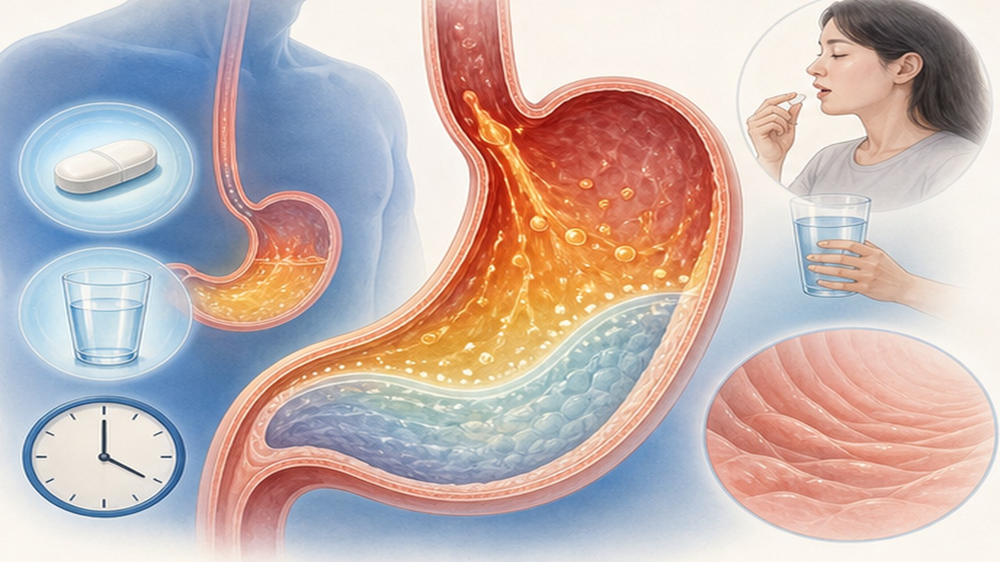
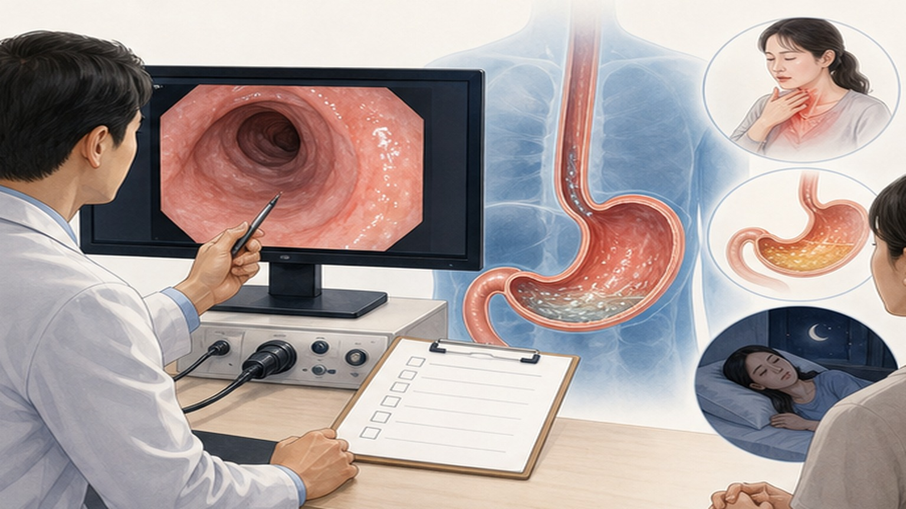
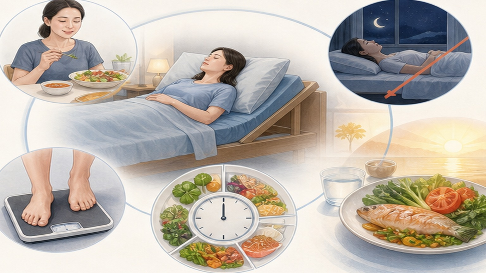

PATIENT EDUCATION · 소화기내과
역류성 식도염(GERD) 생활습관 관리
약물치료와 함께 실천하는 생활습관 교정
CHAPTER 01 · 근거로 보는 생활습관
권고의 무게는 항목마다 다릅니다
STRONG · 01
체중 감량 (유일)
ACG 2022에서 강한 권고 · 중등도 근거를 받은 유일한 생활습관 항목입니다. 나머지는 대부분 조건부 권고입니다.
CONDITIONAL · 02
취침 전 공복 · 상체거상
효과는 뚜렷하나 연구가 소규모·단기라 근거 등급은 낮음~조건부입니다. 실천 비용이 낮아 권할 가치가 있습니다.
WEAK · 03
개별 음식 일괄 금지
커피·초콜릿·감귤 등을 일률적으로 끊게 하는 것은 근거가 약합니다. 본인에게 증상을 일으키는 음식만 개별 확인해 제한합니다.
한국 · 04
내시경이 정상인 경우가 다수
국내 역류질환의 60~70%가 내시경상 정상인 비미란성(NERD)입니다. '검사가 깨끗한데 왜 증상이 있나'가 흔한 질문입니다.
한국 · 05
기준값이 서구와 다르다
산 노출시간(AET) 비정상 기준이 아시아 3.2%, 서구 4.0%로 다릅니다(서울 합의 2020).
원칙 · 06
약을 대신하지 않는다
생활습관 교정은 역류가 일어나는 조건을 줄입니다. 약물치료와 함께 가는 것이지 대체가 아닙니다.
CHAPTER 02 · 역류성 식도염이란
위산이 식도로 역류하는 질환
대표 증상 · 01
가슴쓰림(속쓰림)
명치에서 목 쪽으로 타는 듯한 느낌. 식후나 누운 자세에서 심해집니다.
대표 증상 · 02
신물·쓴물 오름
위 내용물이 목이나 입까지 올라오는 느낌(역류).
대표 증상 · 03
잦은 트림 · 목 이물감 · 만성 기침
3주 이상 가는 기침이나 쉰 목소리도 역류가 원인일 수 있습니다.

CHAPTER 03 · 체중과 역류
복부 비만이 역류를 악화시키는 이유
기전 · 01
복압 → 위내압 → 압력경사
복부 지방이 늘면 복강내압이 올라가 위내압이 높아지고, 식도-위 사이 압력경사가 커지며 일과성 하부식도괄약근 이완(TLESR)이 잦아집니다.
역학 · 02
BMI가 오를수록 위험이 오른다
43개 연구·48만 명 메타분석: BMI가 10 kg/m² 오를 때마다 역류질환 위험 68% 증가(Relative risk(RR) 1.681). BMI 25가 변곡점으로 보고됩니다.
중재 · 03
줄이면 증상이 준다
HUNT 코호트: BMI를 3.5 단위 이상 줄이고 주 1회 이상 약을 쓴 군에서 증상 소실 Odds ratio(OR) 3.95.
한국 · 04
체중보다 '뱃살'이 예측력이 높다
국내 연구에서 내장지방 면적 1,500 이상일 때 OR 2.94. 미란성 식도염은 BMI보다 복부비만이 더 잘 예측했습니다.
허리둘레 · 05
체중계 숫자만 보지 않기
복부둘레는 BMI와 독립적인 위험인자로 보고됩니다. 임계 기준으로 BMI 3.5 감소 또는 허리 5cm 감소가 제시됩니다.
⚠️ 주의 · 06
목표 감량률은 '관행'입니다
흔히 말하는 5~10% 감량 목표는 ACG 본문에 명시된 수치가 아닙니다. 개인 상태에 맞춰 진료에서 정합니다.
CHAPTER 04 · 핵심 권고 1
체중을 감량하세요
왜 · 01
복압이 역류를 밀어올린다
복부 지방이 늘면 배 안 압력이 높아져 위 내용물이 식도로 밀려 올라갑니다.
체중을 줄이면 이 압력 자체가 내려갑니다.
무엇을 · 02
과체중·복부비만이라면 우선
생활습관 항목 가운데 가장 강하게 권고됩니다.
정상 체중이라면 다른 항목(취침 전 공복·자세)에 먼저 집중합니다.
어떻게 · 03
단기 감량보다 유지
무리한 단식보다 식사량·간식·야식을 조정해 꾸준히 줄이고
유지하는 쪽이 증상 개선에 유리합니다.
먼저 · 04
야식·늦은 회식부터
체중과 야간 역류를 동시에 건드리는 항목이라
한 번의 조정으로 두 가지가 같이 좋아집니다.
같이 · 05
복부 압박 줄이기
꽉 끼는 옷·복대처럼 배를 누르는 것은 체중과 별개로
복압을 올립니다. 함께 줄여 주십시오.
주의 · 06
약을 대신하지는 않는다
증상이 좋아져도 처방약을 임의로 중단하지 마시고,
조정이 필요하면 진료 때 상의하십시오.
CHAPTER 05 · 핵심 권고 2
취침 전 2~3시간은 식사를 피하세요
왜 · 01
누우면 중력이 사라진다
서 있을 때는 중력이 위 내용물을 아래로 잡아 주지만,
누우면 그 도움이 없어져 역류가 쉬워집니다.
언제 · 02
잠들기 2~3시간 전까지
위가 어느 정도 비워진 뒤 눕는 것이 목표입니다.
자정에 잔다면 저녁은 21시 무렵까지 마칩니다.
현실적으로 · 03
늦었다면 가볍게·소량으로
회식·야근으로 늦어졌다면 양을 줄이고 기름진 음식을 피한 뒤
상체를 높여 주무십시오.
무엇을 · 04
기름진 음식·과식이 특히 불리
위가 늦게 비워질수록 누웠을 때 역류할 시간이 길어집니다.
늦은 저녁일수록 담백하게 소량으로.
자세 · 05
상체 전체를 높여서
베개만 겹쳐 베면 목만 꺾이고 배가 눌려 역효과입니다.
침대 머리 쪽이나 경사형 쿠션으로.
확인 · 06
효과는 사람마다 다르다
2~3주 실천해도 야간 증상이 그대로면 진료 때 알려 주십시오.
치료 방향을 함께 조정합니다.
CHAPTER 06 · 밤 시간 대책
어떻게 눕느냐가 야간 증상을 바꿉니다
좌측위 · 01
왼쪽으로 눕기
위저부가 왼쪽에 치우쳐 있어, 좌측위로 누우면 위액이 식도-위 접합부보다 낮은 위치에 머뭅니다.
좌측위 근거 · 02
산 노출·산 청소 모두 개선
2023 메타분석: 산 노출시간 2.03~2.71%p 감소, 산 청소시간 74~81초 단축. RCT 성공률 44% vs 우측위 24%.
상체거상 · 03
머리만이 아니라 상체 전체
침대 머리 쪽을 15~20cm 올리거나 쐐기형 베개를 씁니다. 베개만 겹쳐 베면 목이 꺾이고 배가 눌려 역효과입니다.
상체거상 근거 · 04
효과는 있으나 근거 질은 낮다
RCT에서 개선률 69.2% vs 33.3%(RR 2.08). 다만 연구 수가 적고 비뚤림 위험이 높다고 평가됩니다.
⚠️ 상체거상 · 05
부작용도 같이 봅니다
같은 연구에서 근골격계 불편 등 부작용 54%, 삶의 질 지표는 개선되지 않았습니다. 야간 증상이 뚜렷할 때 선택적으로 권합니다.
조합 · 06
공복 + 자세를 같이
취침 전 2~3시간 공복과 좌측위·상체거상을 함께 적용할 때 야간 증상 관리가 가장 안정적입니다.
CHAPTER 07 · 하루 일과 적용 예시
두 권고를 하루 일정에 적용하면
아침 · 점심
규칙적으로, 적당량
과식과 급하게 먹는 습관을 줄입니다. 같은 양이라도 나눠 먹으면
위 팽창이 작아집니다.
저녁
잠들기 2~3시간 전까지
자정에 잔다면 저녁은 21시 무렵까지. 늦어졌다면 양을 줄이고
담백하게 드십시오.
취침 전
눕는 방식까지
식후 즉시 고강도 운동을 피하고, 좌측위 + 상체 15~20cm 거상으로
자리에 듭니다.

CHAPTER 08 · 식이
음식은 '금지 목록'이 아니라 '개별 확인'
원칙 · 01
일괄 금지는 근거가 약하다
ACG 2022는 유발음식 회피를 낮은 근거 · 조건부로 둡니다. 모두에게 같은 금지 목록을 주는 방식은 권장되지 않습니다.
실험 · 02
양과 속도가 더 확실합니다
600mL를 3회 vs 300mL를 6회로 나눠 먹었을 때 역류 17회 vs 10회, 산 노출 12.5% vs 5.5%. 과식·위 팽창이 TLESR을 늘립니다.
탄수화물 · 03
지방보다 단순당이 먼저일 수 있다
RCT·메타에서 총탄수·단순당 제한 시 산 노출시간이 유의하게 감소했습니다(약 2.8%p 감소 보고).
고지방 · 04
위 배출을 늦춥니다
고지방식은 CCK를 올려 위 배출을 지연시키고 하부식도괄약근 압력을 낮춥니다. 국내에서는 튀김류 섭취가 흔해 실제로 문제되는 경우가 많습니다.
⚠️ 커피 · 05
연구끼리 결과가 엇갈립니다
2014년 메타분석은 연관 없음, 2020년 대규모 코호트는 연관 있음으로 갈립니다. '무조건 끊기'보다 본인 증상으로 확인하십시오.
한국 · 06
국물+밥을 빨리 먹는 습관
국물과 밥을 함께 급하게 먹으면 위 팽창이 커집니다. 건더기 위주로 천천히 씹고, 식후 단 디저트·믹스커피를 줄이는 편이 낫습니다.

CHAPTER 09 · 함께 가는 습관
금연 · 절주 · 운동 · 호흡 훈련
금연 · 01
전자담배 포함 완전 금연
니코틴은 하부식도괄약근 압력을 낮추고 침 분비를 줄여 산 청소를 방해합니다. 정상 체중·비약물군에서 금연 시 중증 증상 개선 Odds ratio(OR) 5.67.
절주 · 02
끊기보다 '줄이기'와 타이밍
음주는 역류질환 Odds ratio(OR) 1.48, 미란성 식도염 OR 1.78로 용량 반응을 보입니다. 다만 중재 연구는 부족해 식후 다량·취침 전 음주부터 조정합니다.
운동 · 03
규칙적 중강도는 위험을 낮춘다
33편·242,850명 분석: 주 150분 중강도 유산소에서 위험 감소(Relative risk(RR) 0.80).
⚠️ 운동 · 04
단 식후 즉시 고강도는 역효과
식후 2시간 이내 달리기·중량운동·윗몸일으키기는 복압을 급격히 올려 급성 역류를 유발합니다(U자 관계).
호흡 · 05
횡격막이 '바깥쪽 조임쇠'입니다
복식호흡 훈련 RCT에서 흡기 시 하부식도괄약근 압력이 23.1 → 42.2 mmHg로 올랐고 식후 역류·증상·삶의 질이 개선됐습니다.
호흡 · 06
하루 20분 · 4주부터
매일 20분씩 4주 이상 지속했을 때의 결과입니다. 미국소화기학회 2022 Best Practice에 포함돼 있습니다.
CHAPTER 10 · 실천 체크리스트
오늘부터 실천하기
01 · 가장 확실한 한 수
뱃살부터
과체중·복부비만이라면 체중 감량이 우선입니다(생활습관 중 유일한 강한 권고).
02 · 야간 증상에 먼저 듣는 것
저녁을 앞당기고, 눕는 방식을 바꾼다
잠들기 2~3시간 전까지 마치고, 왼쪽으로 상체 15~20cm 높여 주무십시오.
03 · 금지 목록 대신
기록해서 내 유발 음식만 제한
담배는 끊고 술은 식후 다량·취침 전부터 줄입니다. 약은 임의로 중단하지 마십시오.

END OF DECK · THANK YOU
건강한 식도,
편안한 밤
증상이 변하거나 궁금한 점이 있으면 언제든 내원해 주세요.
Phone
031-893-4560
Address
경기 용인 수지구
광교중앙로 298, 4층
광교중앙로 298, 4층
Specialty
소화기내과 · 일반내과
5대암 검진
5대암 검진
SCAN TO REVISIT
집에서 다시 보기
본 자료는 일반 건강정보이며 개인별 진단·처방을 대신하지 않습니다.
치료나 약을 시작·중단·변경하기 전 반드시 담당 의료진과 상담하세요.